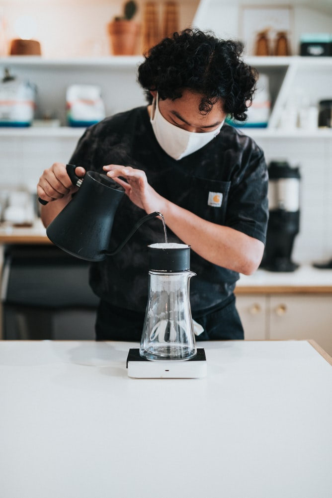

Čaj & Chill
Jsme moderní čajovna v centru Prahy, která dělá z popíjení toho nejlepšího fair-trade sourcovaného čaje designový zážitek.
Výběrové čaje

Vaříme jen čaje té nejlepší kvality, všechny jsou fair-trade. S našimi pěstiteli se sami setkáváme, abychom se ujistili, že pracují ve férových podmínkách. Podáváme pravé čínské čaje, japonskou matchu, ale i bylinné čaje pěstované na českých loukách.
Skvělý interiér
Náš interiér navrhovali ti nejlepší čeští designéři. Každý si v našich třech pokojích najde to své. Ať už preferujete minimalismus nebo kodaňský design. Všechen náš nábytek je navíc buď z druhé ruky, nebo z recyklovaného materiálu.
Výborné jídlo
K našim čajům si můžete zakousnout lahodné dezerty a slané pochoutky, kterými bychom se nestyděli pohostit ani britskou královnu.